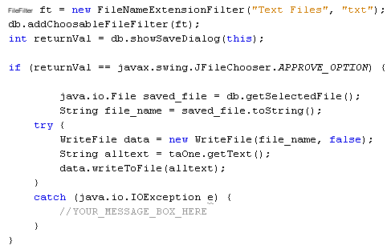

The Save File Dialogue Box
Java Form Controls: 1 2 3 4 5 6 7
If you want to display the Save File dialogue box instead of the Open File dialogue box then you can use your File Chooser again. This time, instead of showOpenDialog you use showSaveDialog:
int returnVal = db.showSaveDialog( this );
Again, this is enough to display the dialogue box. You don't have to do anything else, though you can add a file filter, as well.
FileFilter ft = new FileNameExtensionFilter( "Text
Files", "txt" );
db.addChoosableFileFilter( ft );
int returnVal = db.showSaveDialog(this);
To write the file, add an import statement to the top of your code:
import textfiles.WriteFile;
You can then create a new WriteFile object. Again, you can place the code inside of an IF Statement, along with a try … catch block:

The last two lines in the code above get the data from the text area. This is then placed into a string variable called alltext. We then call the writeToFile method from our WriteFile class.
Exercise
Create a code stub for your File > Save menu item. Add the above code
to it. Run your programme and try it out. Type some new text into the text area.
Then click File > Save on your menu. When the "Save File"
dialogue box appears, type a file name and then click Save. Check your file
to see if it has indeed been created, and that it contains the text you wrote
in the text area.
And that's it for this introduction to forms and form objects. We'll move on. In the next section, we'll take a look at databases.